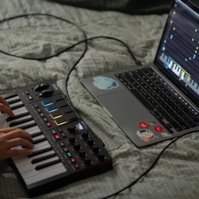
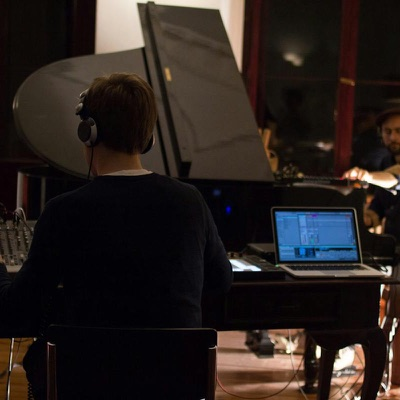

education
learning by doing
-

Melodics
The app that makes practice fun and habit, teaching drums, keys, and pads. I lead the content and learning side: from music licensing and production, to how practice feels, and how people actually get better.
melodics.com → -
Writing on practice
On repetition, flow, and the art of deliberate practice.
the science of practice → -

Teaching & curriculum
Academic work in music technology and creative production.
read the interview →